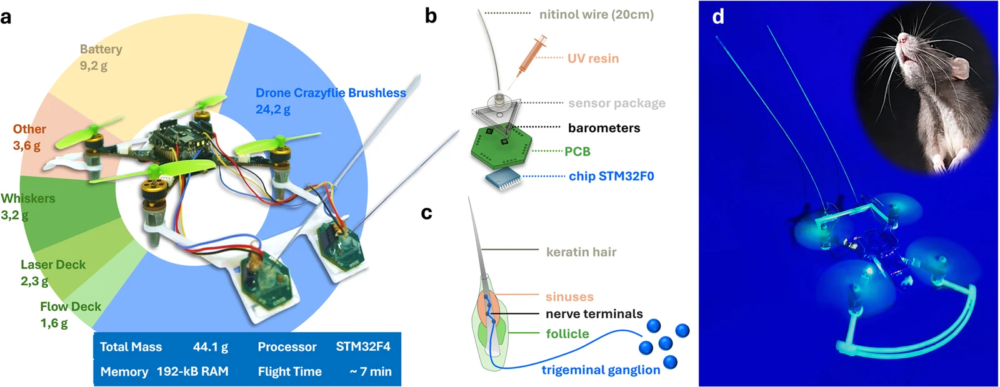

The origins
How Tactile Flight came about.
The original idea behind Tactile Flight built up from a few results collected over the years. Here is the story, as told by Prof. Salua Hamaza.
-
2019
A drone that slides along a wall
2D Contour Following with an Unmanned Aerial Manipulator: Towards Tactile-Based Aerial Navigation · Hamaza, Georgilas & Richardson · IEEE/RSJ IROS 2019
The last output of my PhD showed, for the first time, the concept of aerial sliding on 2D contours: a drone equipped with a 1-DoF linear actuator was tasked to slide along a smooth 2D contour, such as a wall. I called this work “towards tactile-based aerial navigation”, because it gave the idea of something that feels its way across a wall.
Here, the only information available about the contact was the timestamped force magnitude along the axis normal to the wall. Although this was enough to stay in contact with a smooth wall, the natural follow-up question for me was: how can this generalise to different surfaces? Also, the end-effector was compliant in one direction but rigid in the others, so the yaw moments during sliding grew the longer we swiped...
-
2024
Embodying compliant touch
Embodying Compliant Touch on Drones for Aerial Tactile Navigation · Bredenbeck, Della Santina & Hamaza · IEEE Robotics and Automation Letters
By 2024 I was a PI at TU Delft, and together with my PhD student Anton Bredenbeck we picked up where I had left off. This time the end-effector we developed had compliance along two axes, with two degrees of freedom. Compliance in the yaw plane allowed better tracing of angled surfaces, and therefore better contour following in general… but challenges were still visible with walls angled away from the drone, and with loss of contact.
-
2024
A whisker for drones
A Biomorphic Whisker Sensor for Aerial Tactile Applications · Ye, de Croon & Hamaza · IEEE ICRA 2024
Also in 2024, together with my PhD student Chaoxiang Ye, we worked on a new tactile sensor: the whisker. It is made of pressure sensors equally spaced at the base, with a long wire centred between them. We created it to be very lightweight and low-latency, giving information about contact and how contact varies over time.
In this first work we showed that we can characterise contact localisation along the whisker shaft, answering three questions:
- In which direction is the whisker bent?
- By how much is it bent?
- Where on the shaft is the contact causing the bending?
-
2025
Odometry from touch
Tactile Odometry in Aerial Physical Interaction · Schuster, Bredenbeck, Beitelschmidt & Hamaza · IEEE/RSJ IROS
Next we explored the concept of gaining drone odometry from contact with surfaces. We needed something precise that could give distance-travelled information as we swept across a wall, and we found the answer in a mouse trackball. We mounted it on the compliant end-effector and again swept along contours angled in different ways, this time also gaining odometry at contact.
-
2026
Whisker-based tactile flight on tiny drones
Whisker-based Tactile Flight for Tiny Drones · Ye, de Croon & Hamaza · Nature Communications 17, 9743 (2026)
This work showed a step change in the behaviours a drone could achieve using only two whiskers on a tiny drone of about 44 grams. We showed wall following with walls oriented in different ways, and also the new idea of tactile mapping from sparse contact events: the drone builds a map and finds the exit of a confined environment using only its tactile sensor data and its own odometry.
Yet many questions remain open:
- How do we generalise to larger environments?
- How do we localise inside them?
- Can we build odometry from touch?
- How do we scale up while being constrained to very little flight time?

The whiskered drone and its biological counterpart. Fig. 1 from Ye, de Croon & Hamaza (2026) · CC BY 4.0 -
Now
And that is when I got this ERC grant!
Tactile Flight takes on these open questions in a five-year research programme. Follow the story from here on the Publications tab.
Go to Publications →